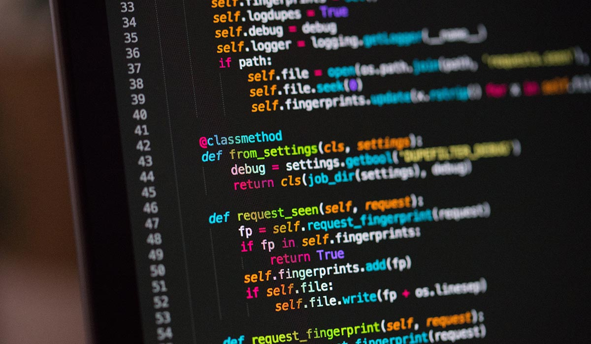

La programmazione è la branca fondamentale su cui si reggono la maggior parte delle altre branche. L'Informatica è un pò come una ragnatela, ciascun concetto si ricollega a diversi concetti non sempre con un ordine logico da seguire. Generalmente non importa da dove parti, se dalla programmazione web o software l'importante è che tu parta. Ovviamente entrambe le tipologie di programmazione ti daranno sbocchi differenti quindi è importante padroneggiarle entrambe.
Nessuna
La programmazione C all'inizio può essere molto difficile da comprendere ma fornisce una solida base per mettere insieme diverse conoscenze trasversali come il sistema binario e come vengono gestiti i dati in MEMORIA. Inoltre, i programmi commerciali più grandi al mondo sono per la maggior parte scritti in C o C++ e per una possibile carriera come analista malware (o reverse engineer) il C è fondamentale.
La programmazione è la branca fondamentale su cui si reggono la maggior parte delle altre branche. L'Informatica è un pò come una ragnatela, ciascun concetto si ricollega a diversi concetti non sempre con un ordine logico da seguire. Generalmente non importa da dove parti, se dalla programmazione web o software l'importante è che tu parta. Ovviamente entrambe le tipologie di programmazione ti daranno sbocchi differenti quindi è importante padroneggiarle entrambe.
In questa parte inizieremo a prendere confidenza con le pagine HTML e le abbelliremo grazie al CSS. Come vederemo più tardi HTML ci servirà a definire la struttura della nostra pagina web (quindi gli elementi che ci servono) mentre CSS abbellirà gli elementi che abbiamo prima dichiarato con HTML.
JavaScriptPer creare pagine web che non sembrino delle vetrine useremo JavaScript che è il linguaggio più famoso in assoluto per rendere dinamica la tua pagina web e/o creare delle animazioni su di essa. Inoltre, vedremo alcuni rischi legati all'utilizzo di Javascript comparandoli con qualche linguaggio server-side.
SQL - In arrivoQuando in una pagina web avremo bisogno di immagazzinare in massa molti dati non possiamo semplicemente metterli in delle variabili o in qualche file sul server ma dobbiamo usare delle soluzioni più "professionali" come l'uso di un database. Per interrogare i dati che saranno all'interno del nostro spazio virtuale chiamato database ci serviremo di un linguaggio dichiarativo come SQL. Inoltre durante il corso si accenna all'utilizzo improprio di quest'ultimo e del come potrebbe portare a subire un attacco hacker.
PHP - In arrivoPHP è un linguaggio server-side fondamentale da conoscere. Oltre ad essere la base di molti framework come Laravel è tutt'oggi uno dei linguaggi backend più usati al mondo. Utilizzare PHP al posto di JavaScript si rivelerà una scelta molto importante perché entrambi, nonostante facciano circa le stesse cose hanno delle proprietà molto diverse.
Il corso offre all'utente una visione chiara sul mondo di Internet e su come creare delle reti mediante Ubuntu 22.04. Conoscere come creare delle reti e i loro servizi saranno preziosi per una possibile carriera nella cybersecurity
Nessuna
Prima ancora di vedere cosa sono le reti o qualunque altra cosa un pò più complessa, forse è meglio sapere con cosa lavoriamo tutti i giorni ogni volta che clicchiamo su qualche icona o il testo che scriviamo (temporaneamente) sul notepad dove va a finire.
Networking I (Sistemi e reti 4° anno)Inizieremo il nostro viaggio con una comprensione approfondita degli indirizzi IP, i mattoni fondamentali di qualsiasi connessione in rete. Imparerai le tecniche per trasferire dati tra sistemi remoti con facilità e sicurezza, dando vita alle tue capacità di gestione dei file su larga scala. Sarai in grado di configurare connessioni remote senza preoccupazioni di intercettazioni indesiderate, garantendo la sicurezza delle tue comunicazioni. Ma non ci fermeremo qui. Esploreremo altri protocolli essenziali come TCP/IP e UDP, gettando le basi per una comprensione completa del funzionamento delle reti. Conquistando queste competenze, sarai in grado di diagnosticare e risolvere problemi di connettività con facilità, diventando un vero maestro delle reti informatiche. In questo corso, non solo acquisirai conoscenze tecniche avanzate, ma sarai anche in grado di applicarle in scenari reali attraverso esercizi pratici e progetti stimolanti.
Networking II (Sistemi e reti 5° anno)Networking I è la base per la comprensione delle reti moderne. In questo modulo invece, andremo a vedere concetti 'più avanzati' che si muovono più sulla sicurezza Informatica come la crittografia o i firewall/IDS ecc...
Anonimato in ReteIl corso di anonimato in rete riprendere i concetti del corso del 'Networking 1 e 2' e li guarda sotto un altro aspetto: quello della sicurezza, del come i nostri dati vengono trattati. Infatti spesso e volentieri sentiamo quando la VPN sia importante ma davvero sarà così?
Non esiste una vera e propria branca dell'Informatica chiamata 'Hacking' ma in generale indichiamo tutti quei concetti che non vengono utilizzati proprio per lo scopo per cui sono stati progettati. L'hacker storicamente altro non ERA che un programmatore di talento che riusciva a risolvere problemi in maniera geniale e quindi in Inglese: fare un "hack". Col tempo i mass media hanno stravolto il significato del termine hacker creando mistero e fantascienza attorno alla figura dell'hacker mentre è un professionsista come gli altri. Non esiste un percorso scolastico nè tantomeno un percorso standard, alcuni semplicemente ci nascono e poi acquisiscono le competenze tecniche per potersi fregiare del titolo di hacker!
Il Reverse Engineering è una branca che si occupa di guardare i programmi da un punto di vista differente, proprio quello dell'hacker. In realtà l'hacker in questo caso è colui che NON possiede il codice sorgente del software e vuole assolutamente capire come funziona. Mediante questa branca vengono create crack per giochi, exploit, patch per programmi ormai non più manutenuti ecc...
Tecnologie webCi sono diverse branche della Sicurezza Informatica e durante questa learning-path andremo ad esplorare quelle più grandi: quella software e quella web. Dopo aver imparato a programmare in C e a fare reverse-engineering dei programmi non ci resta altro che imparare a creare pagine web per poi attaccarle! In questo modulo ci saranno tecnologie come: HTML, CSS, JavaScript, PHP e SQL.
Top 10 OWASP - In arrivoLa top 10 owasp sono le 10 vulnerabilità web secondo la società no profit OWASP che causano maggiori danni. Generalmente è il punto d'inizio per chiunque si affacci alla sicurezza informatica sul lato web.
Privilege EscalationQuando si penetra all'interno di un server generalmente entri con l'utente più "basso", il nostro compito in questo modulo è imparare quali sono le tecniche che ci permetteranno di ottenere i privilegi da root.